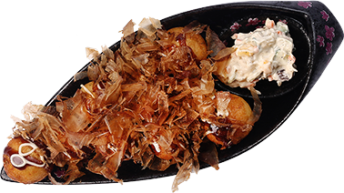
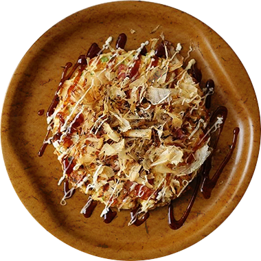
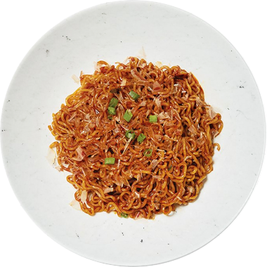

타코야키
밀가루 반죽 안에 잘게 자른 문어와 파 등을
넣고 전용 틀에서 한입 크기의 공 모양으로
구워 타코야키 전용 소스와 마요네즈를
바르고, 가츠오부시, 김가루 등을 뿌려 먹는
음식이다.

오코노미야키
뜨거운 철판에 기름을 두르고 고기, 해산물,
양배추 등을 잘게 썰어 올려놓은 뒤 밀가루
반죽을 둥글게 둘러 지져내고, 마요네즈를
바르고, 가츠오부시를 뿌려 먹는 음식이다.

야키소바
삶은 국수에 야채와 고기 등을 넣고 볶은
요리로 일본의 기본적인 소바는 메밀로
면을 만들지만 야키소바는 밀가루로 만든
면을 이용하여 만든 음식이다.